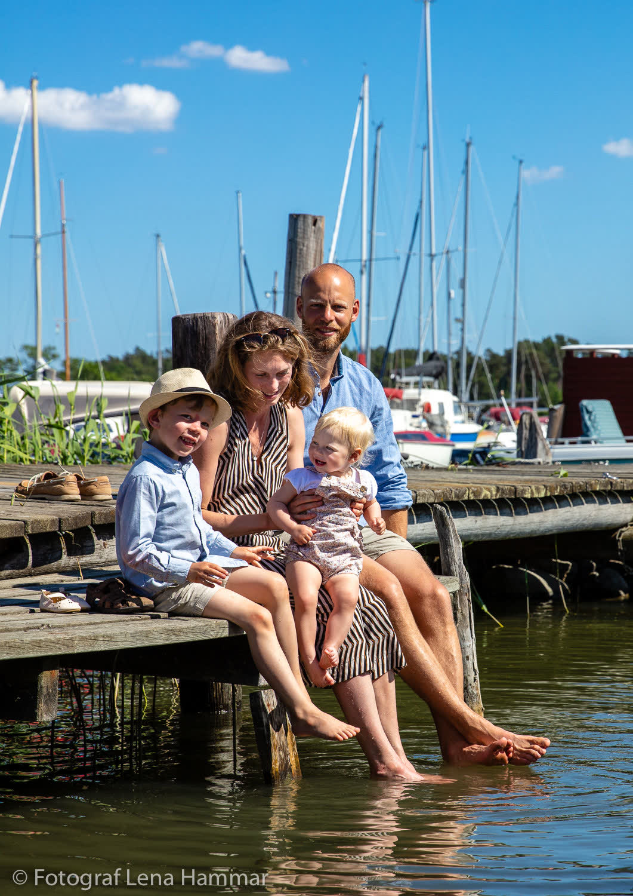
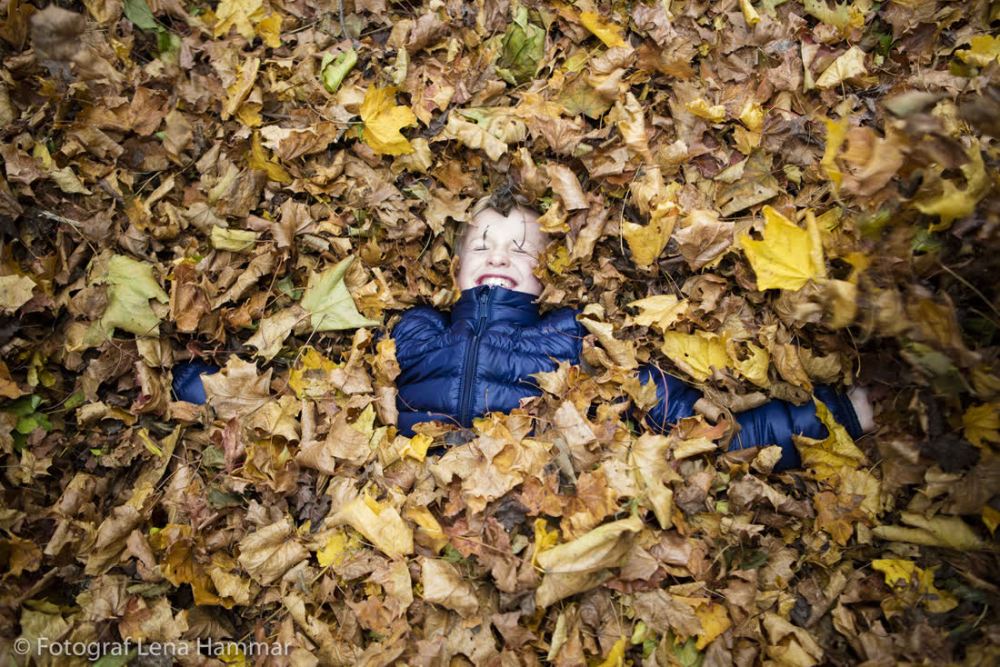

Jag fotograferar långsamt.
Ljuset får bestämma.
bröllopsfotografi · leksand, dalarna
Jag fotograferar långsamt.
Ljuset får bestämma.
Det som händer
mellan det planerade.


Vigseln och en promenad efteråt. Två timmar.
11 000 krFrån morgon till första dans. Allt däremellan.
28 000 krDagen före, dagen, och morgonen efter.
42 000 kr



”Det kändes som att hon inte var där. Och sedan fanns allt där, i bilderna.”
frida & anton, tällberg
om
Jag heter Ingrid. Jag bor i ett gammalt timmerhus vid Siljan och fotograferar ett tjugotal bröllop om året. Inte fler.
Jag arbetar i dagsljus, säger inte mycket, och redigerar varsamt. Bilderna kommer inom fem veckor, med ett tryckt urval i linnebox.
kontakt
Tack. Jag hör av mig i lugn och ro. (Demo, inget skickades.)